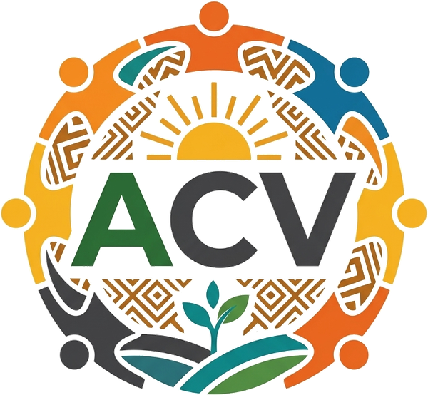

Young Congolese professionals, leading from the front
Passionate young Congolese professionals committed to community-led development, environmental protection and youth empowerment — in the office, in the field, and everywhere in between.
Set the direction, stay close to the field
Elie Bwira
Founder & Executive DirectorA young environmental and conservation leader with over eight years of experience in sustainability and youth leadership, Elie founded ACV to put community voice at the centre of recovery in Eastern DRC.
Vincent Manimani
Co-Founder & Programs CoordinatorA dedicated youth-development professional with a background in monitoring & evaluation, coordination and community engagement, committed to delivering programs that translate into lasting social change.
The team that makes it run
Finance, partnerships, communications, IT and field delivery — the functions that turn a good idea into a program communities can rely on.
Grace David
Administration & Finance ManagerAn organised, results-driven professional in administration and financial management, keeping ACV's operations efficient, accountable and well resourced.
Richard Balagizi
Partnerships ManagerA strategic relationship-builder experienced in stakeholder engagement and resource mobilisation, dedicated to forging collaborations that grow ACV's impact.
Christelle Soki
Communications AssistantA creative communicator with a passion for storytelling and digital engagement, helping ACV's work reach the partners and communities who need to see it.
Esther Zaina
Administration AssistantA detail-oriented administrative professional supporting office coordination and records management so program teams can stay focused on the field.
Justin Batumike
Agricultural Field OfficerA crop-production specialist working directly with farmer groups on field operations and sustainable practices that raise yields and resilience.
Rodrigue Shukuru
Youth Project LeadA dynamic youth leader driving project implementation and community mobilisation, turning program plans into action on the ground.
Boaz Lubundu
IT & Communications OfficerA technology and communications professional supporting ACV's digital systems, information management and field-to-office reporting.
ACV grows through people who choose to stay close to the problem
We periodically open roles for field officers, technical specialists and volunteers, especially for Congolese professionals and diaspora talent who want to contribute remotely.